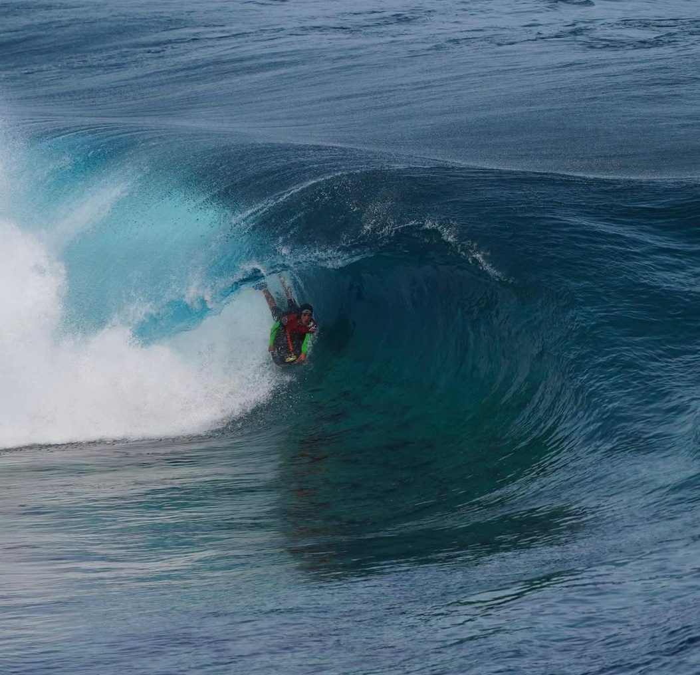
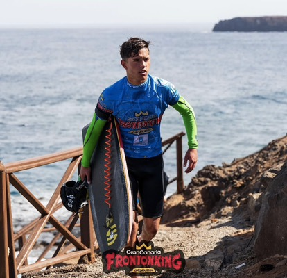
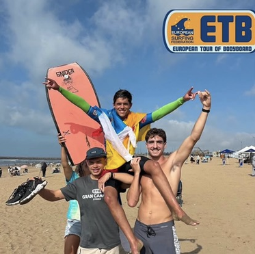

Gáldar, Gran Canaria · Islas Canarias
Mauro Bolaños Quesada
@mauro_quesadaa · bolanosquesadamauro@gmail.com
Bodyboarder profesional. Campeón de España y de Europa en categorías junior; referente joven en Canarias. El mar como escenario de competición y como parte esencial de mi identidad.

Presentación personal
Mauro Bolaños Quesada — 18 años. Gáldar, Gran Canaria.
Desde muy joven, mi vida ha estado profundamente vinculada al mar. No solo como escenario de entrenamiento y competición, sino como parte esencial de mi identidad. He crecido en la costa, rodeado de olas, comunidad y respeto por la naturaleza.
Actualmente estudio socorrismo profesional, una vocación que refuerza mi compromiso con la seguridad, el servicio a los demás y el conocimiento técnico del medio marino.
Mi intención es seguir formándome en el ámbito de la actividad física y deportiva, un camino que me permitirá compaginar mi carrera como deportista con la formación profesional en un entorno que amo.
Llevo un estilo de vida saludable, activo y equilibrado, con valores muy presentes como el esfuerzo, el compañerismo y la constancia.
Soy una persona cercana, humilde y muy familiar, algo que agradezco cada día gracias al apoyo de mi barrio y mi entorno. En mi playa me conocen tanto jóvenes como mayores, y me siento afortunado de contar con el cariño y respeto de todos mis vecinos, que han seguido de cerca mi evolución como deportista y como persona. Para mí, representar a mi isla y a mi gente no es solo un logro deportivo, sino un honor que llevo con responsabilidad y alegría.
Palmarés
Resultados y títulos recogidos en el dossier deportivo.
2019
Campeón de España Sub12
2023
Campeón de Canarias Sub16
2024
Campeón de España X Comunidades Sub18
2024
Campeón de Canarias Sub18
2024
Campeón de España Sub18
2024
Campeón de Europa Pro Junior
2025
9th in the IBC World Tour Junior
2025
Campeón de España X Comunidades Sub18
2025
Campeón de España del circuito nacional Sub18
2025
Campeón de Canarias Sub18
Reconocimiento en la Gala del Comité Olímpico Español por ser el mejor junior destacado en el año 2025.
Proyección
Para la temporada 2025, mis objetivos son:
- Competir en el circuito europeo Pro Junior e internacional IBC World Tour.
- Clasificarme entre los mejores 3 del ranking mundial junior.
- Consolidar mi imagen como deportista referente joven en Canarias.
- Participar en eventos como el Frontón King, entre otros.
Valores personales y deportivos
Tal como se recoge en el dossier: esfuerzo, compañerismo y constancia; cercanía, humildad y vínculo con el barrio, la playa y la representación de la isla.
Esfuerzo y constancia
Entrenamiento y competición con regularidad y exigencia.
Compañerismo
Respeto a la comunidad surf y bodyboard.
Compromiso con el mar
Socorrismo profesional y conocimiento técnico del medio marino.
Identidad canaria
Representar a la isla y a la gente con responsabilidad y alegría.
Impacto en redes
Datos del dossier deportivo sobre la presencia en Instagram.
Buen engagement con la comunidad local y surfista. Crecimiento constante, contenido de calidad.
En el dossier figuran además referencias a publicaciones en Instagram (véase la galería «Fotos y vídeos»).
Fotos y vídeos
Imágenes extraídas del dossier deportivo (PDF).


Argumentación
El bodyboard es uno de los deportes con mayor proyección en Canarias, tanto por su conexión con el mar como por su atractivo turístico. Eventos como el Frontón King Pro generan gran impacto mediático y turístico. Apoyar a jóvenes talentos canarios no solo impulsa el deporte base, sino que refuerza valores de compromiso, superación y sostenibilidad.
Visibilidad para el patrocinador
Marcas y medios citados en el dossier deportivo.
- Sniper Bodyboard, Ondina Surf shop.
- Improve your skills, Sniper Canarias, Bodyboard Sniper, Ondina Surf shop, Hoff Canarias, Dash Visual, Churchill Swim Fins.
- Tv Canaria, Abocan…
Sniper Bodyboards & Mauro — Rising Tides of Youth (YouTube), según el dossier.
Contacto
Teléfono de contacto: 656 611 752 · Email e Instagram como en el dossier.